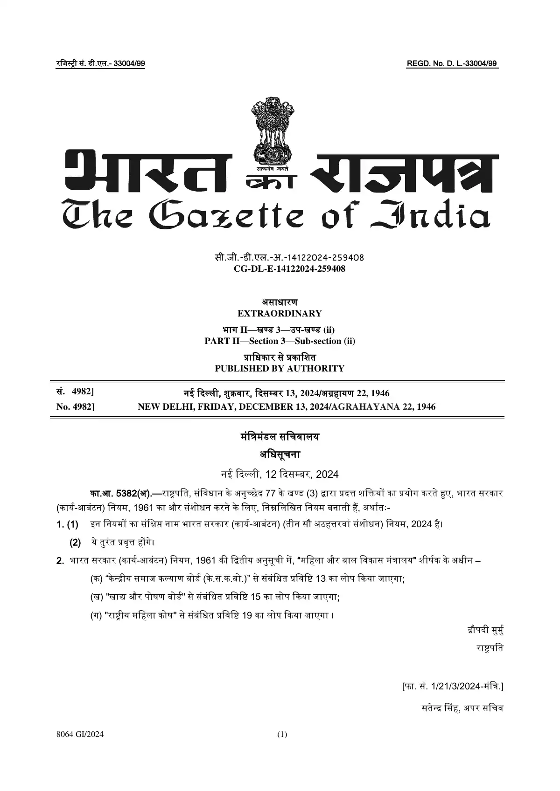
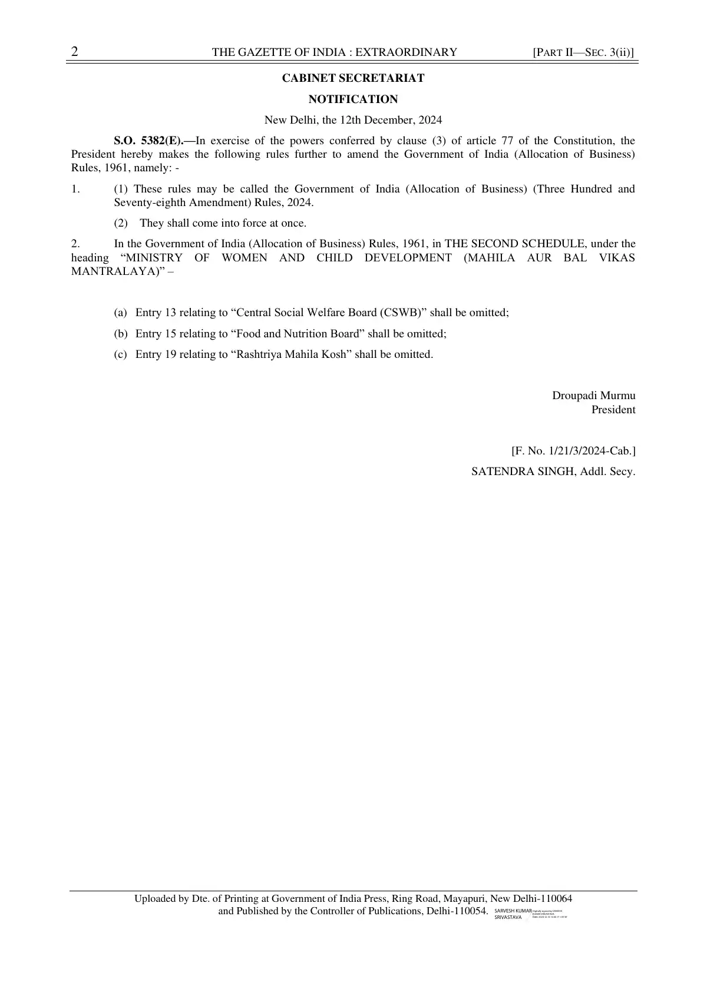

Amendment #378 (S.O. 5382(E), 2024)
3 changes: 0 to the First Schedule, 3 to the Second Schedule. 3 applied
The order, page by page
Page 1 of 2

Page 2 of 2

123Schedule 2 › MINISTRY OF WOMEN AND CHILD DEVELOPMENT › entry 13
applied at schedule 2 › ministry MINISTRY OF WOMEN AND CHILD DEVELOPMENT › entry 13 in the Rules after #378
Schedule 2 › MINISTRY OF WOMEN AND CHILD DEVELOPMENT › entry 15
applied at schedule 2 › ministry MINISTRY OF WOMEN AND CHILD DEVELOPMENT › entry 15 in the Rules after #378
Schedule 2 › MINISTRY OF WOMEN AND CHILD DEVELOPMENT › entry 19
applied at schedule 2 › ministry MINISTRY OF WOMEN AND CHILD DEVELOPMENT › entry 19 in the Rules after #378
How this document was read
From the Government of India (Allocation of Business) Rules, 1961 and their amendments, as published by the Cabinet Secretariat (cabsec.gov.in), read by orgpedia. The readings of the older scanned gazettes have known gaps.